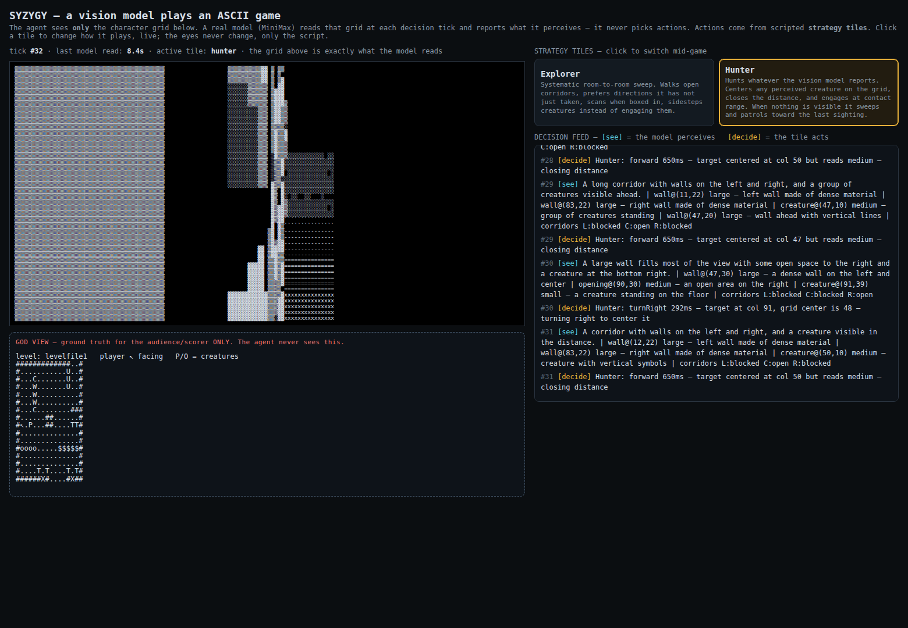

Simulation: the game played by reading
This is an open-source ASCII raycaster, played live by our system. There is exactly one learned component in the loop: a vision model that reads the game's character grid the way a normal vision system reads pixels. Everything that decides what to do is a scripted strategy tile — the classic game-AI pattern, no learned planner hiding in the walls.

How it works
- [see] — at each tick, the model is sent the letter grid and nothing else. It replies with structured perception only: what's visible, with grid coordinates — corridors open or blocked, a creature at column 48, row 20. It has no action vocabulary at all.
- [decide] — a scripted tile turns that perception into one action and says why, in the feed: "Hunter: turnLeft — target at col 25, grid center is 48 — turning left to center it." Next tick the creature sits at (48,20), centered, and Hunter closes the distance.
- You steer by tile. Click Explorer or Hunter mid-game and the decisions change immediately — same eyes, same model, different judgment. Explorer sweeps room to room; Hunter centers targets and pursues.
The honest numbers on this exhibit
The hosted model we used for perception takes 9–15 seconds per read. The design target was a decision every 1.5–2 seconds, so the demo plays at the model's speed, and the page header shows the last read's latency — nothing is faked to hide it. That gap is the point of the research program: the real eyes for a system like this will be a small local student model — the fleet's precedent judge answers in 7 ms on an ARM chip at 6.8M parameters — while big hosted models serve as teachers, not as the ones holding the controller.
Other limits, stated plainly: the engine has no fire button, so Hunter "engages" by contact pursuit; the model sometimes misreads floor texture as small creatures along the bottom rows; and its coordinates are approximate, though its corridor open/blocked calls were consistently right in observed runs.
Run it yourself
git clone https://github.com/SuperInstance/syzygy-demo
cd syzygy-demo
npm install
node server.js # then open http://127.0.0.1:8734/Tiles are small plain-JS modules in lib/strategies/ —
copy Explorer, change one rule, and watch the feed change its mind.
Full architecture and limits:
the demo repo.
Sister exhibit: the arena that never sleeps
The same tile idea, playing a different game around the clock: the COLOR SQUAD tournament arena — scripted strategies meeting in a live loop, with replays. Syzygy's demo is what happens when the tiles' eyes become a model that reads.